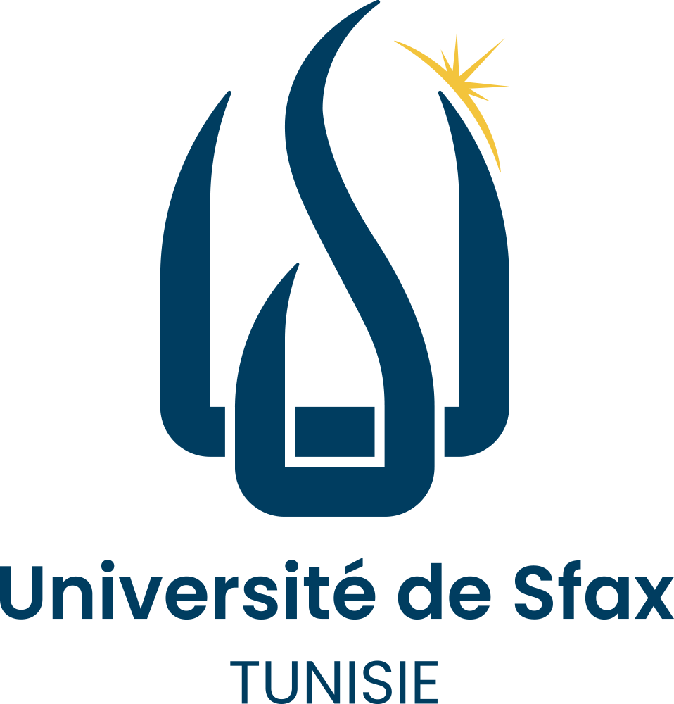
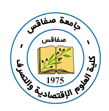

| Accueil | Inscription | Programme | Accès | Affiche |
Le 2ᵉ Colloque International de Management, Finance et Comptabilité (MFC 2025) est organisé par le Laboratoire LARTIGE-FSEGS, avec le soutien de :
Ce colloque vise à réunir des chercheurs en sciences de gestion autour des enjeux auxquels font face les entreprises à l’ère de la digitalisation. Les innovations technologiques, les bouleversements économiques, les crises récentes, l’évolution des marchés financiers et les nouvelles exigences sociétales imposent une relecture des modèles de création et de répartition de la valeur.
Membres :
Abdelfattah Bouri, Anis Ben Amar, Anis Jarboui, Faten Lakhal, Ghazi Zouari, Habib Affes, Hamadi Fakhfakh, Hassan Bellihi, Ines Abdelkefi, Jamel Chouaibi, Jean-Philippe Gallan, Jean-Pierre Pichard-Stamford, Kamel Boussafi, Thierry Poulain-Rehm, Karim Mezghani, Karim Trabelsi, Mohamed Karim Kefi, Mohamed Ouiakoub, Mourad Mroura, Philippe Gillet, Rim Hadiji Zouari, Sonia Zouari, Tijani Amara, Yosra Mnif, Younes Boujelbène
Vous pouvez afficher ici les logos des institutions partenaires et les coordonnées de contact.
|  |  |
Pour plus de détails sur le colloque, consultez le site officiel du laboratoire LARTIGE :
www.lartige.tn – 2ᵉ Colloque International en Management, Finance et Comptabilité